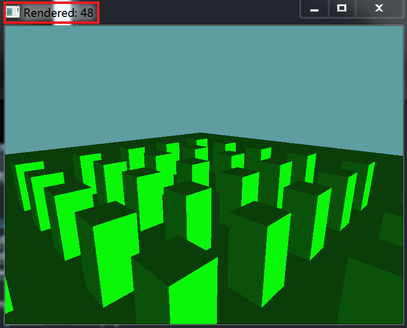

Culling
We can now test robust enough intersections to perform vibility culling on a scene level! Whoo!!!! To achieve this, we're going to have to move the Rendering responsibility out of the OBJ class and into the OctreeNode class.
OBJ - Render Flag
There is a slight problem in this shift of responsibility. One OBJ can belong to multiple OctreeNode objects. To make sure that only the first node that contains the OBJ actually renders it, we're going to add a new flag to the OBJ class.
protected bool wasRendered = false;
OBJ - Reset Flag
Because we added a Render Flag, let's add a way to clear that flag. Still working with the OBJ class, add the following method:
public void ResetRenderFlag() {
wasRendered = false;
}
OBJ - Non Recursive Render
The OBJ class should no longer render its-self recursivley. This is becuase the OctreeNode is going to be rendering only OBJ objects that are in view. We are changing our renderer from hierarchial traversal to spacial traversal. We're going to add a new function to OBJ to render only this object, and return true only if this is the first time the new render function was called, and something was rendered.
Additionally, this function will take in a frustum as an argument and do a narrow-phase visibility check. That is, if the OctreeNode calls this function, we know the node is visible. But that doens't mean this object is within the camera frustum. So, we do a narrow phase test between the frustum and the objects bounding sphere.
public bool NonRecursiveRender(Plane[] frustum) {
// Is there anything to render?
if (model == null) {
return false;
}
// Already rendered once!
if (wasRendered) {
return false;
}
// Is the bounds of this obejct within the view?
Sphere bounds = new Sphere();
bounds.Position = new Point(
Matrix4.MultiplyPoint(WorldMatrix, model.BoundingSphere.Position.ToVector())
);
float scalar = System.Math.Abs(System.Math.Max(
System.Math.Max(
System.Math.Abs(WorldMatrix[0, 0]), System.Math.Abs(WorldMatrix[1, 1])),
System.Math.Abs(WorldMatrix[2, 2])));
bounds.Radius = model.BoundingSphere.Radius * scalar;
if (!Collisions.Intersects(frustum, bounds)) {
return false;
}
// Cool, we can render!
wasRendered = true;
GL.PushMatrix();
GL.MultMatrix(WorldMatrix.OpenGL);
model.Render();
GL.PopMatrix();
return true;
}
OctreeNode - Render
Add a new method to OctreeNode. Call this method Render. It will have the following signature:
public int Render(Plane[] frustum) {
int total = 0;
// TODO: Render logic for this node
// TODO: Recurse trough all children
return total;
}
The key here is, you can only render an OctreeNode IF you have a frustum. This happens because we will be culling the node against the frustum.
First up, the total is 0. Before doing anything, check if the Bounds of the Node are intersecting with the frustum (Frsutum V AABB). If not, just return 0.
From here on out, if we didn't return we know we have a visible node.
Next, if the Contents of the node are not null, go ahead and call the NonRecursiveRender function on each of the contents. for every NonRecursiveRender called, increment total by 1, if the drawing took place.
Lastly, if Children is not null, loop trough each of the child OctreeNode objects, and recursively call their Render functions, passing in the same frustum. Be sure to add the result of that function to the total variable.
OctreeNode - ResetRenderFlag
Once a frame is done, we need a way to mark all objects as non-rendered. For this reason we are going to add a ResetRenderFlag function to OctreeNode. This function is simple, if the node has contents (OBJ objects), it calls ResetRenderFlag on each of them. If the node has children, this ResetRenderFlag function recursivley calls its-self on each child.
public void ResetRenderFlag() {
if (Contents != null) {
foreach (OBJ content in Contents) {
content.ResetRenderFlag();
}
}
if (Children != null) {
foreach (OctreeNode child in Children) {
child.ResetRenderFlag();
}
}
}
Unit Test
There is no real unit test, we're just going to make culling work in the CameraSample.
The Scene class already contains an Octree, but it's WAY too small. Find where the scene is Initialized and change it from scene.Initialize(7f); to a bigger Octree scene.Initialize(70f);.
Now, just because we have an Octree, does not mean anything is in it. Change the AddCubeToSceneRoot function so that it adds cubes not only into the hierarchy, but also the octree.
void AddCubeToSceneRoot(Vector3 position, Vector3 scale) {
scene.RootObject.Children.Add(new OBJ(cube));
int count = scene.RootObject.Children.Count - 1;
scene.RootObject.Children[count].Parent = scene.RootObject;
scene.RootObject.Children[count].Position = position;
scene.RootObject.Children[count].Scale = scale;
// Record object with spacial partitioning tree
scene.Octree.Insert(scene.RootObject.Children[count]);
}
Lastly, we need to change the Render function so that it renders the octree, instead of the root node, and that it clears render flags after the scene was drawn:
public override void Render() {
GL.LoadMatrix(camera.ViewMatrix.OpenGL);
DrawOrigin();
GL.Enable(EnableCap.Lighting);
int numRendered = scene.Octree.Render(camera.Frustum);
scene.Octree.ResetRenderFlag();
Window.Title = "Rendered: " + numRendered;
GL.Disable(EnableCap.Lighting);
}
Try it out
Running the game now, as you move the camera trough the world, you should see considerably less objects being drawn.
